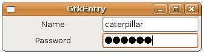

GtkEntry提供一個文字輸入欄位，可以輸入文字或是設定為一般顯示、密碼顯示或搭配 GtkEntryCompletion 製作自動完成功能等，自動完成的範例稍微複雜，在這邊先不提及，以下的程式是個簡單的設定示範，範例中使用了 GtkTable 進行版面配置：
- gtk_entry_demo.c
#include <gtk/gtk.h>
int main(int argc, char *argv[]) {
GtkWidget *window;
GtkWidget *nameEntry, *pwdEntry;
GtkWidget *table;
gtk_init(&argc, &argv);
window = gtk_window_new(GTK_WINDOW_TOPLEVEL);
gtk_window_set_title(GTK_WINDOW(window), "GtkEntry");
nameEntry = gtk_entry_new();
pwdEntry = gtk_entry_new();
gtk_entry_set_visibility(GTK_ENTRY(pwdEntry), FALSE);
table = gtk_table_new(2, 2, TRUE);
gtk_table_attach_defaults(GTK_TABLE(table),
gtk_label_new("Name"), 0, 1, 0, 1);
gtk_table_attach_defaults(GTK_TABLE(table), nameEntry, 1, 2, 0, 1);
gtk_table_attach_defaults(GTK_TABLE(table),
gtk_label_new("Password"), 0, 1, 1, 2);
gtk_table_attach_defaults(GTK_TABLE(table), pwdEntry, 1, 2, 1, 2);
gtk_container_add(GTK_CONTAINER(window), table);
g_signal_connect(GTK_OBJECT(window), "destroy",
G_CALLBACK(gtk_main_quit), NULL);
gtk_widget_show_all(window);
gtk_main();
return 0;
}gtk_entry_set_visibility()可以設定輸入字元是否可見，設定為FALSE的話，密碼顯示會使用遮罩字元（像是*）來回應使用者的輸入，您可以使用gtk_entry_set_invisible_char()設定遮罩字元。
GtkEntry還可以使用gtk_entry_set_alignment()設定文字對齊方式，可設定的值為0到1，表示水平方向由左到右的對齊位置，也可以使用gtk_entry_set_editable()設定GtkEntry的欄位是否可編輯。
下圖為執行時的參考畫面：
